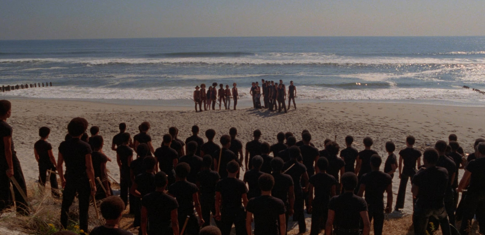
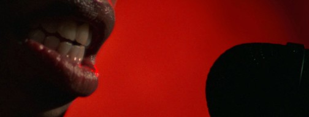
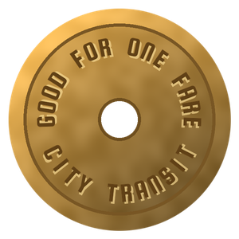
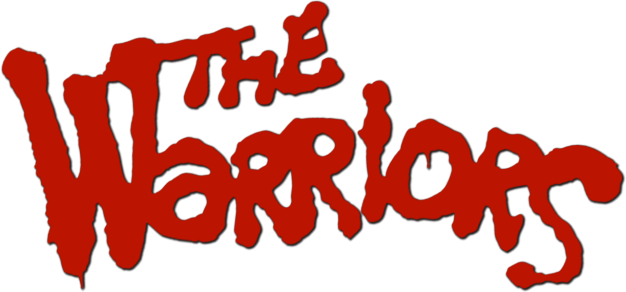
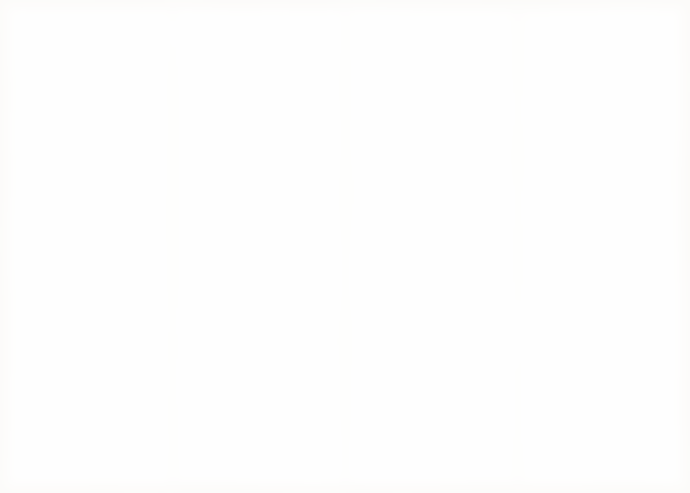

W
CONEY ISLANDSTILLWELL AVLast stop. Everybody off.
Coney Island, first light, 1979
HOME. WORTH THE WHOLE RIDE.
Late night radio
REQUEST LINE

Going out to: the boys from Coney.
The word was out all night. Now the word is off.
the DJ
Truce in effect
COUNTER RULES
Bats checked at the door.
Uniforms and face paint welcome.
No roller skates past the counter.
No bottles clinking.
Nobody here is coming out to play.
Vests welcome. Orphans too.
Tag the wall outside, Rembrandt.
Not the counter.

Fare home
50¢
Gets you home.
W
A
R
R
I
O
R
S
Coupon
SHOW YOUR COLORS
Free cherry cola with
any chili dog. One per vest.
CONEY ISLAND

The boys from Coney, on home turf.
CHILI DOGS AT SUNRISE.
CAN YOU DIG IT?
Menu and ride home map inside
Open all night. Grill hot by 5 A.M.
Chili dogs nine to a tray, 9.00.
Prices subject to change. Form W-9.
Printed in Brooklyn, N.Y., 1979.

